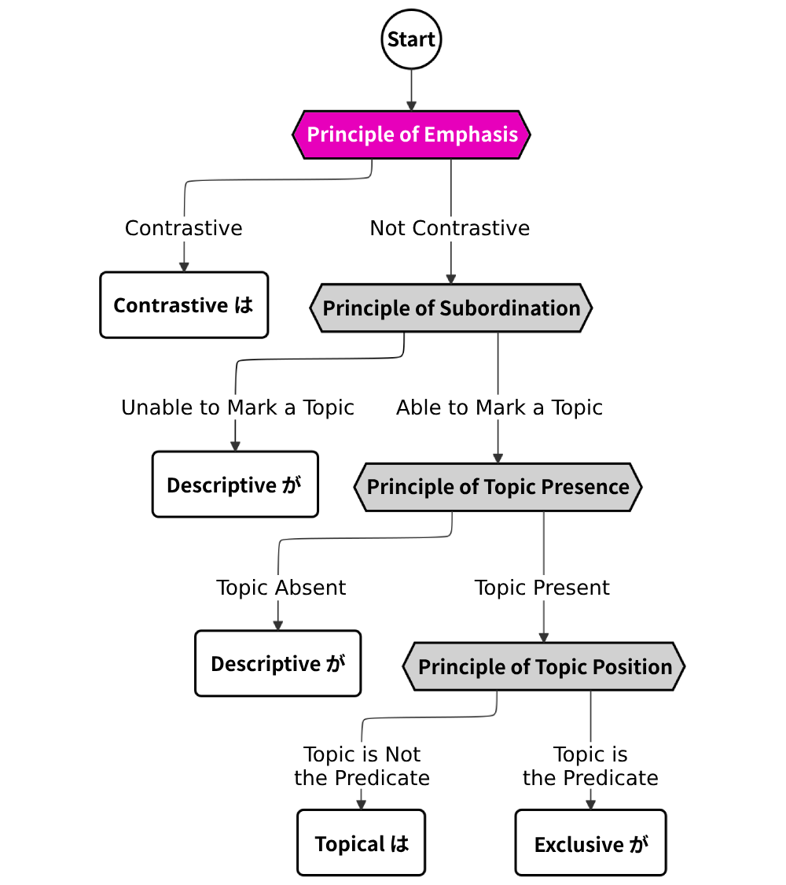
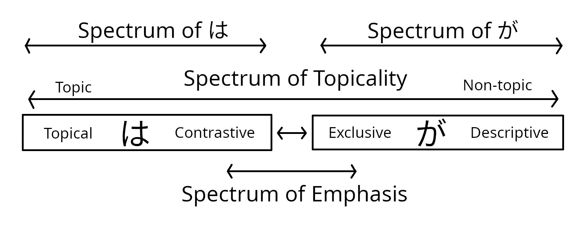

This article is one in a series that comprehensively explains usage of は vs. が in Japanese. Most content is directly pulled from 『｢は｣ と ｢が｣』 by Hisashi Noda.

How is it Emphasized?
Contrastive は and exclusive が are emphasis markers, and the first stage of our flowchart is the principle of emphasis. In this chapter, I’ll discuss all usages of both contrastive は and exclusive が.
It’s possible to view both は and が as a spectrum. On the spectrum of は, we have topical は on one end, and contrastive は on the other end. On the spectrum of が, we have descriptive が on one end, and exclusive が on the other. Between topical は and descriptive が, we have a spectrum of topicality, indicating how topical the word is. Between contrastive は and exclusive が, we have a spectrum of emphasis, indicating in which way the word is emphasized.

The idea behind this figure is to illustrate that the two usages of は and the two usages of が I introduced are not mutually exclusive. Every usage of は or が falls somewhere on the spectrum.
Generally speaking, there are three categories of は.
- Topical は marking a topic (no contrastive nuance)
- Contrastive は marking a topic (contrastive nuance)
- Contrastive は marking a non-topic (contrastive nuance)
1. 父はこの本を買ってくれた。
My dad bought this book for me.
2. 兄は肉が好きだが、弟は魚が好きだ。
My brother likes meat, but my younger brother likes fish.
3. 私は肉は好きだが、魚は好きではない。
I like meat, but I don't like fish.
The same idea can be roughly applied to が.
- Descriptive が marking a subject (no exclusive nuance)
- Exclusive が marking a subject (exclusive nuance)
- Exclusive が which subjectivizes a non-subject (exclusive nuance)
4. 富士山が見えるよ。
I can see Mount Fuji.
5. 君が主役だ。
You're the lead actor.
6. 六本木のディスコが芸能人がよく来る。
Celebrities come to the discotheques in Roppongi often.
There is a crucial difference between (c) and (f) here. が has not fully evolved as an emphasis marker, so there is no usage where exclusive が is fully removed from its subject-marking function, unlike は, which can be fully removed from its topic-marking function. Some instances of exclusive が mark adverbs, clauses, or case-marked nouns other than the subject, but this is only true for those that have subject-like character. Thus, when exclusive が marks a non-subject, we may interpret that non-subject as having become a subject, a process known as subjectivization (Kuno 1973).
Types of Contrast
All usages of contrastive は have one of two forms of contrast: explicit or implicit.
| Definition | |
|---|---|
| Explicit Contrast | What’s being contrasted against is explicitly mentioned. |
| Implicit Contrast | What’s being contrasted against is not mentioned, only implied. |
Explicit Contrast
Explicit contrast occurs when two explicit things are being contrasted.
7. 子供たちはカレーは作っているが、ごはんはまだ炊いていない。
The kids are making curry, but the rice is not cooked yet.
It often appears with multiple contrastive は, but it is possible with just one contrastive は as well.
8. 形はいいが、色が悪い。
It has a nice shape, but that color is horrendous.
Explicit contrast can be further divided into two types: opposite or adjacent.
| Definition | |
|---|---|
| Opposite Contrast | Shows that the state of one contrasted element is opposite to the state of another contrasted element. |
| Adjacent Contrast | Shows that the state of one contrasted element is different, but not opposite from the state of another contrasted element. |
In the following examples, (9) shows opposite contrast, and (10) shows adjacent contrast.
9. 私は肉は好きだが、魚は好きではない。
I like eating meat, but I don’t like fish.
10. 私は肉はスーパーで買い、魚は市場で買う。
I buy meat at the supermarket, but I buy fish at the street market.
In sentences with opposite contrast, the predicates of the contrasted elements are usually positive and negative forms of the same predicate. They may also be predicates with opposite meanings. This is illustrated in example (9), with the predicates “好き” (like) and “好きではない” (don’t like).
In sentences with adjacent contrast, the predicates of the contrasted elements are similar but express some subtle differences. This is illustrated in example (10), where the predicates are both “買う” (buy), but the location where the food is bought is different.
Both of these usages of contrastive は are often connected with 〜が or 〜けど clauses.
Both (9) and (10) show contrastive は marking objects, while the topic of the sentence is “私”. None of the contrastive は in (9) and (10) following the topic “私は” mark the topic, so they are examples of type (c) は.
Misfortunate Contrast
Misfortunate contrast is a relatively minor usage of explicit contrastive は that appears when something with negative connotations is being described, so it is often followed by statements such as ｢困ったことだ｣, or ｢いけないことだ｣.
11. 家は取られ、妻には逃げられた。
They took my house, and my wife left me.
12. ｢出席日数は足りないし、レポートも提出していないし、受験も受けていない。｣
“My attendence is too low, I never turned in a report, and I didn’t even take the final.”
More Examples of Explicit Contrast
13. サブはゴルフはやるが、生活は派手ではない。
Sahb plays golf, but doesn’t live a flashy life.
14. ｢風は冷たいけど、ええ天気や。｣
“The wind is cold, but it’s nice out.”
Although there is only one instance of contrastive は in (14), it still has explicit contrast, because “風は冷たい” (the wind is cold) and “ええ天気” (nice weather) are approximately opposite in meaning.
15. 雨は降っているが、雪は降っていない。
It’s raining, but not snowing.
16. 私たちは数十秒間イキを止めていることはできますが、心臓を止めておくことはできません。
We can hold our breaths for just under a minute, but we can’t stop our heartbeat.
17. みりんは、魚には煮崩れを防いで味をしめるため最初に入れ、野菜にはツヤを出し、やわらかくするため最後に入れる、というのも大切なポイントだ。
Mirin should be added first to the fish so that it keeps its flavor and doesn’t fall apart during boiling, and afterwards to the vegetables for softness, and to give them a nice finish.
Implicit Contrast
Implicit contrast occurs when something being contrasted against isn’t explicitly mentioned, only implied.
18. 子供たちはカレーは作っている。
The kids are making curry. (But…)
In (18), even though the making of curry is not explicitly being compared against something else, the contrastive は here implies that there is some other thing that hasn’t been cooked yet.
Implicit contrastive は can be identified through the following properties.
| Implicit contrastive は tends to.. |
|---|
| - Appear closer to the predicate - Mark objects, 〜に elements, or adverbs; less often subjects - Mark a noun with a counterpart that is easy to contrast with - Be pronounced with a higher pitch along with what it marks |
The more of these properties a sentence has, the stronger its contrastive nuance becomes. Consider examples (19) and (20):
19. 私はその質問には答えられません。
I cannot answer that question.
20. その質問には私は答えられません。
I cannot answer that question.
When there are two or more elements in a sentence marked by は, the one closer to the predicate takes on more contrastive nuance. This happens because the emphasized portion of a sentence with contrastive は is not just the element marked by contrastive は, but also all of the content after the element up to the end of its predicate. It is easier to pick up on contrastive nuance if the emphasized portion is uninterrupted.
Thus, in example (19), it’s natural to interpret that the speaker is clarifying that he cannot answer that question specifically. In (20), it’s natural to interpret that the speaker is clarifying that he, specifically, cannot answer the question.
However, you may notice that in (19), the more contrastive は marks a 〜に element, while in (20), the more contrastive は marks a subject. As we know from the table above, contrastive は tends to mark objects, 〜に elements, or adverbs, instead of subjects. As a result, it is possible to interpret that there is almost no contrastive nuance on “私” in (20), but incredibly unnatural to interpret that there is no contrastive nuance on “その質問に” in (19).
More Examples of Implicit Contrast
21. こうしたなかで、子宮がんだけは年々確実に減っていく。
Amidst all this, uterine cancer is the only cancer that is steadily decreasing year by year.
22. 私はみかんは好きだ。
I do enjoy oranges.
23. 子供たちはキャンプファイヤーはしなかった。
The kids didn’t light a campfire.
Contrastive は in Negative Statements
Implicit contrastive は is extremely common when the predicate is negative. These are predicates that end in じゃない, ていない, くない, ではない, じゃなくて, ません, ず, etc. For example, if we were to make the statement (24) negative, it is natural to add contrastive は, as shown in (25).
24. 日本の老人はシャワーでがまんできる。
The elderly of Japan can get by with just showering.
25. 日本の老人はシャワーではがまんできん。
The elderly of Japan can’t stand just showering.
This happens because a positive predicate is typically considered to be the default state. When something is expressed to go against that default, we are implicitly contrasting it with something with the predicate’s positive state. If we were to explicitly contrast the example above with this positive state (i.e. make the contrastive は explicit), it would look like (26).
26. 日本の老人は入浴なら週2回でもがまんできるけど、シャワーではがまんできん。
The elderly of Japan can get by with bathing as long as it’s at least twice a week, but they can’t stand just showering.
However, we are not always strongly conscious of this implicitly contrasted state, and with some negative statements, it’s not easy to imagine something that is contrasted against.
27. 人間の麻薬には中毒がつきものだが、猫のマタタビには中毒はない。
Human drugs are addictive, but there is no addictiveness in silver vine for cats.
In example (27), there is explicit contrast between “人間の麻薬には” (in human drugs) and “猫のマタタビには” (in silver vine for cats). However, it’s hard to imagine something that can be explicitly contrasted with “中毒は” (addictiveness). Thus, when contrastive は is used with negative statements, the nuance of contrast is often weaker than that of positive statements, or completely absent, as is the case in (27).
You may also be familiar with the set phrase ではない/ではありません. The は in this phrase is also thought to be implicit contrastive は, but it has almost entirely lost its contrastive nuance.
Negative Statements without Contrastive は
Some statements will not contain contrastive は even if they are negative. Such cases are listed below.
| Cases Where Negative Statements Don’t Contain Contrastive は |
|---|
| - The inflected negative ending (e.g. ない, ません) of the predicate is strongly bound to its stem. - The negative predicate is strongly bound to its subject. |
(28) and (29) are cases where the inflected ending is strongly bound to its stem.
28. 杉矢、ボー然としている。
杉矢｢…ホタルがいない…｣
*Sugiya stares into the distance*
Sugiya: “I don’t see a single firefly…”
29. ウイルスのプログラムは、単に行動形態がウイルスに似ているから、そう名付けられているだけで、あらかじめプログラムの上で決められた行動をする以外の何者でもない。そして、自然界に存在するウイルスと違って、人間が作ったものだということである。この点が、意外と知られていない。
Computer viruses are named so simply because their behavior resembles that of a virus, but they are nothing more than programs that carry out predetermined actions. And unlike viruses that exist in nature, these viruses are man-made. It’s this detail that is, surprisingly, not widely known.
(28) is a topicless sentence, while (29) is an specificational sentence. The ending ない seen with the predicate いる in (28) has a negating effect on the entirety of the word “いない”, but unlike in negative statements with contrastive は, this effect does not extend to other words. So it is not the entire sentence ホタルがいる which is negated, but only the word いる. “いない” may be viewed as one component separate from all other phrases, similarly to the word 不在 (absent).
The structure of (28) is:
ホタル が+ (いる+ない) → ホタルがいない。
This statement by Sugiya is simply a description of what he sees. As he stares into the distance, he comments tangentially about how there are no fireflies that he sees. He is not talking topically about fireflies, nor is he answering a question about whether or not there are fireflies there.
If we were to use は in this statement instead, it would change the implied context of the sentence. As you can see in the following structure, contrastive は may be added if the entire sentence ホタルがいる is negated.
(
ホタル が いる+ない) → ホタルはいない。
A speaker might use this sentence as an answer to someone else asking「ホタルはいますか？」(“Are there fireflies there?”). Since ホタルがいる is being negated, we can rephrase this entire sentence to ｢ホタルがいるというわけではない。｣ (“It is not true that there are fireflies.”)
(29) also follows the same principle, where contrastive は does not appear because ない is strongly bound to the predicate 知られている (known). Whether or not “this detail” (この点) is known has not been called into question, and the point of the sentence is not to confirm or deny whether or not “this detail” is well known, but to specify that it is “this detail” that is not well known.
This is the same concept acting through the addition of は in example (25).
日本の老人 は+ (シャワーで がまんできる+ない) → 日本の老人はシャワーではがまんできない。
Although the entire sentence is not negated here, the contrastive は (after “シャワーで”) is added as a result of ない acting upon the portion “シャワーで”, not just “がまんできる.” The question is whether or not Japan’s elderly can bear with showering, and the answer is no, they would much prefer taking baths instead; they can’t stand it when they can only shower.
The second point listed in the table at the beginning of this section, where the negative predicate is strongly bound to its subject, covers sentences like (30).
30. 野上は、学生の頃から、女がいないことがなかった…それも、いつも複数で…
Nogami’s never been without a girl, ever since we were students… and it’s always been at least two at the same time…
The portion “女がいない” (without a girl) takes が because it’s a strongly subordinate clause (see Levels of Subordination). The が after こと, however, is present because it belongs to the set phrase ことがない. Usually, you can tell that something is a set phrase if it appears as one entry in a dictionary. If it appears with が, it is less likely to be expressed with contrastive は.
Types of Words Contrastive は Can Mark
Generally speaking, contrastive は can attach to all case-marked nouns (〜が, 〜を, 〜に, 〜で, 〜へ, 〜と, 〜から, 〜より, and 〜まで).
31. きょうはパン屋へは行かなかった。
Today, I didn’t go to the bread store.
However, contrastive は usually can’t attach to the following cases:
| Contrastive は usually does NOT attach to |
|---|
| - 〜で expressing means (電車で), material (木で), or cause (かぜで) - 〜から expressing cause (不手際から) |
(32) and (33) are ungrammatical, because contrastive は are attaching to words marked by で expressing means and cause.
32. ×きょうは電車では来なかった。
Today, I didn’t come by bus.
33. ×きょうはかぜでは休まなかった。
Today, I didn’t stay home because of my cold.
If the speaker is mentioning some condition instead of a matter of fact, however, then contrastive は can attach to these cases.
34. 頂上までは、車では行けない。
You can’t get to the peak with a car.
35. あいつは、ちょっとしたかぜでは休まない。
He wouldn’t take the day off just because of a cold.
Now, let’s take a look at which adverbs contrastive は can mark.
| Adverb Expresses… | Examples | Markable by は? |
|---|---|---|
| Manner | そっと, あっさり | × (○) |
| Extent | たいへん, 非常に | × |
| Aspect | もう, だんだん | × |
| Tense | きのう, その時まで | ○ |
| Mood | きっと, ぜひ | × |
| Quantity | 3人, 100円, ちょっと | ○ |
36. ×これはたいへんは面白くない。
This is very uninteresting.
37. ×もうは着いていないと思う。
I think they haven’t arrived yet.
38. お昼ごろまでは家にいた。
I was at home until noon.
39. ×きっとは来ないと思う。
I think he will definitely not come.
40. 二百本は売れない。
Two hundred copies is too much for me to sell.
41. 全部は食べなかった。
I didn’t eat all of it.
Generally speaking, the only adverbs that can be marked by は express tense or a quantity of something. In some cases, contrastive は can mark adverbs that express manner, but only when mentioning some condition instead of a matter of fact, shown in (42) and (43).
42. ×そっとは手渡さなかった。
I didn’t hand it over without putting up a fight.
43. そっとは手渡せない。
I can’t hand it over without putting up a fight.
Contrastive は may also mark 〜て appearing in successive phrases.
44. かすかな音を立てて降りそそぐ雨が、睡蓮の葉に似た輪を描いては消えて行く。
The rain falls with a soft sound, making short-lived circles on the water like lily leaves.
Contrastive は may also mark conditional clauses. When it marks 〜たら, 〜(れ)ば, or 〜と, the clause ending must change into 〜ては. When it marks 〜なら, the clause ending must change into 〜のでは.
45. 甘いものを食べても太らない人もいますし、そんな子が無理に甘いものをガマンしてノイローゼになっては、元も子もありません。
There are people who don’t gain weight even if they eat sweets, so I think it’s counterproductive for her to resist them so hard if it just stresses her out.
Finally, contrastive は may appear within a predicate. The predicates 聞いてはくれた, 愛しはする, おいしくはある, and 雨ではある are all examples of this case.
46. 女性は凡庸さに近いものを愛しはしますが、それだけのことです。
Women love mediocre things sometimes, that’s all.
47. また、日本IBM製のパソコンでも、日本語モードを使っていれば感染はするが発病はしないのである。
Using a computer from IBM Japan with a Japanese locale will not stop the virus from infecting your computer, but it will prevent it from delivering its payload.
Types of Exclusion
All forms of exclusive が can have one of two forms of exclusion: strong or weak.
| Definition | |
|---|---|
| Strong Exclusion | One option is picked out of a pool of other options to be marked by exclusive が, and those other options are apparent. |
| Weak Exclusion | One option is picked out of a pool of other options to be marked by exclusive が, but those other options are not apparent. |
Strong Exclusion
The nuance of strongly exclusive が expresses a clear comparison between one thing marked by exclusive が versus some other thing(s). Strong exclusion often takes the form of 〜のほうが… or 〜がいちばん… because these phrases directly imply the existence of other options that can be marked by exclusive が.
48. 神戸より大阪のほうがにぎやかだ。
Osaka is a much more livelier place than Kobe.
49. あれも嫌い、これも嫌い、と否定を表明しつづける人より、あれも好き、これも好き、と肯定を表明しつづける人のほうが、なにごとによらず喜びは多い。
People who are vocal about the things they love will always be more happy than people who are vocal about the things they hate.
50. 一度帰ったら、なかなか出てこられないことは、桃子が一番よく知ってるでしょう？
Out of all of us, Momoko knows better than anyone how hard it is to leave home after coming back.
Weak Exclusion
With weak exclusion, whatever is marked by exclusive が is still being singled out, but no clear comparison is drawn between it and some other thing(s). (51) through (53) and the previous example (29) are all specificational sentences with weak exclusion.
51. 君が主役だ。
You’re the lead actor.
52. 暇を見つけては遊ぶ。これが仕事の極意!
Slack off whenever you have the chance. That is the secret to working!
53. ｢そこが出口よ｣ と彼女は言った。
“The exit’s that way,” she said.
Exclusive が used in questions to ask for specification are often weakly exclusive.
54. ｢どの辺がスキー場になるんですか？｣
“Where is the ski resort?”
55. ｢あなたが代表者ですか？｣
“Are you the representative?”
Specificational sentences that express intention are also considered weakly exclusive.
56. ｢私が行きます。｣
“I will go.”
Another case where weak exclusion appears is in commands where the subject is explicitly stated. It’s rare for the subject to be mentioned in commands, so when it is, it’s likely because the speaker is specifying who should carry out the command, adding exclusive nuance.
57. ｢どいて｣
と、桃子は、良介のショッピングカーをつついた。
｢そっちがどけや｣
“Move,” said Momoko, nudging Ryosuke’s shopping cart.
“You move.”
Types of Words Exclusive が Can Mark
We already know that exclusive が can mark a subject, but there also exists another form of exclusive が called subjectivizing exclusive が that may mark non-subjects, turning them into subjects.
Unlike contrastive は, the set of case-marked nouns that subjectivizing exclusive が can mark is much more limited. For example, it may not mark objects.
58. わたしはジュースは飲んだが、お酒は飲まなかった。
I had juice, but no alcohol.
59. ×わたしはお酒ではなくジュースが飲んだ。
I did not drink alcohol, but juice.
The following table details the markers of case-marked nouns that subjectivizing exclusive が may replace. The original case particles must be deleted and replaced with が.
| Exclusive が can usually replace |
|---|
| - の expressing possession - に expressing time, location, or direction - で expressing location |
(60) is an example where の expressing possession has been replaced by subjectivizing exclusive が.
60. だが、現在はまだ北の高気圧の方が勢力が強い。
But for the time being, the high-pressure system in the north is still the most severe.
(61) is an example where に expressing location has been replaced by subjectivizing exclusive が.
61. 広島は
流川 あたりがバーや飲屋がおおいが、広島駅のすぐそばの駅西 の路地で飲んだ。
In Hiroshima, there are many bars and drinking establishments around Nagarekawa, but we drank in an alley shop at Ekinishi, which is very close to Hiroshima Station.
(62) is an example where に expressing direction has been replaced by subjectivizing exclusive が.
62. 六本木のディスコが芸能人がよく来る。
Celebrities come to the discotheques in Roppongi often.
(63) is an example where で expressing location has been replaced by subjectivizing exclusive が.
63. この店がつけで買物できる。
You can shop on credit here.
This subjectivizing function of exclusive が allows for the formation of sentences with multiple subjects. Example (60) and (62) are double-subject sentences, and the first clause of (61) is a triple-subject structure. Double-subject sentences can also be formed with topical は, which I explain in Additional は Structures.
The set of adverbs that subjectivizing exclusive が can mark is also narrower than that of contrastive は. Generally, only adverbs that express tense, such as 今 or ことし, may be marked.
64. 洗濯屋さんはいまが一年で一番忙しい。
The cleaners are at their busiest at this time of year.
Contrastive は and Exclusive が In Negative Statements
Consider (65) and (66):
65. あいつが許せない。(Exclusive が)
He is not forgivable.
66. あいつは許せない。(Contrastive は)
He is not forgivable.
The English translations and the emphasized words are approximations of the sentence’s nuance. The first sentence with exclusive が is a statement that specifies who is unforgivable out of all people, while the second sentence with contrastive は is a statement that specifies whether or not this person is unforgivable (as contrastive は in a negative statement). We can rephrase (66) here into ｢あいつが許せるというわけではない。｣ (“It is not true that he is forgivable.”)
Notice that exclusive が makes an implication about other people (that they are not the unforgivable ones), whereas this particular usage of contrastive は makes no implications about other people. Thus, contrastive は is not interchangeable with exclusive が in statements that explicitly specify something out of a pool of other things, like (67) and (68).
67. こいつよりあいつが許せない。
She’s okay, but he’s unforgiveable.
68. こいつではなくあいつが許せない。
He’s the unforgiveable one, not her.